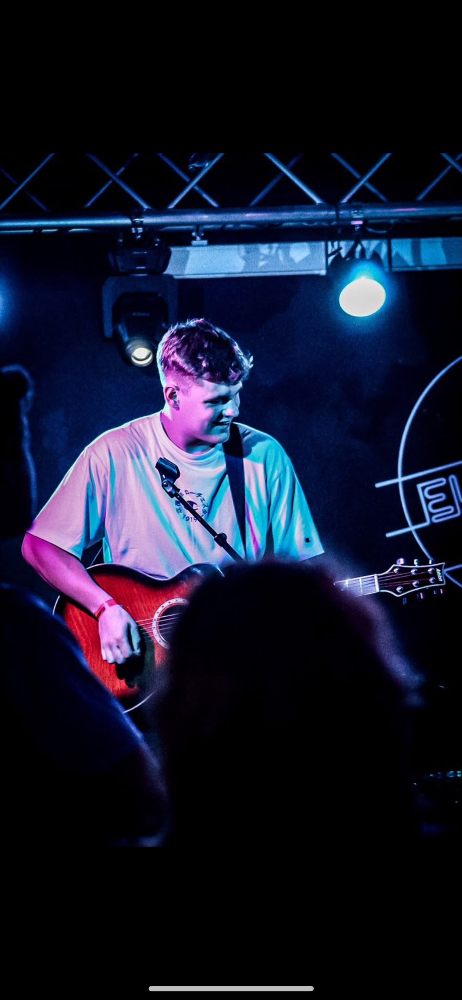

OLLIE | THE LEAD


While the rhythm section provides the foundation, Ollie provides the fire. With a keen ear for melody and a rig built for versatility, he delivers the iconic solos that define the Chord-ially Invited sound.
Ollie’s approach to the guitar is the perfect counterpoint to the band's "powerhouse" energy. By understanding exactly when to hold back and when to let fly, he ensures that every cover—from indie anthems to classic rock bangers—has that professional "record-perfect" finish.
Every guitarist remembers the first time they heard a riff and just had to pick up a guitar, what was yours?Well, first off I wanted to learn drums [he laughs], no let me be serious. I said to my parents I wanted to learn an instrument and they said 'no drums', that was that. But then my grandad bought me my first guitar, an Ashton electro-acoustic. It's probably one of my best guitars. I then got lessons from the age of 9 and studied music through school and at college.
How would you describe your approach or style of playing?To be honest, the approach I've always gone with is to just try to be myself, I try not to be anyone else, I just bring my own feelings to it. I do have influences, like David Gilmour from Pink Floyd, with his 'less is more' approach. When he plays his solos there's a real emotion there; there's a story told through every note. But, I try to make it my own-be myself you know? It's about just being yourself and let the music come through that.
I'm quite a private person so if someone wants to get to know me, they really need to come and listen to me play. When I play a solo, on stage, if I'm in the zone, it's all off feeling, and it unlocks something. Sometimes I get into an emotional memory and I feel like I, like, lean into it and push that emotion.
What was your most memorable gig like?I don't really have anything wild or exciting, not like some of Belle's stories. Mine are just dropping picks and breaking strings, which is pretty standard for a guitarist. I think the important thing with gigs is that if something does go wrong, you've just got to keep going, you know? The show must go on. I'm a bit of a perfectionist, but in the moment, you just have to keep going, fix the problem later and make sure it doens't happen next time.
What's on your playlist at the moment?At the moment; Linkin Park, Bring Me The Horizon, Chris Stapleton, Raye. My music tastes have always been pretty eclectic, I like a bit of everything; It's only getting more broad as I get older.
Em was telling us how she prepares for gigs with vocal warmups and drinks, do you have anything like that to get ready?No nothing like that, mine is more over-preparedness and food. Nothing too heavy, I just make sure I've got my part nailed. Before one gig I ate a full I like to keep some chocolate buttons handy, and hydration is key too!
The Lead Rig
Guitars:
- Primary: Fender Squire Telecaster / Gibson Les Paul]
- Secondary: Fender Squire Stratocaster]
Amp Setup:
- Blackstar HT Club 40 MkII
Pedalboard Essentials:
- MultiFX: Boss GX-100
- Analog FX: Various; including Boss Chorus, Boss Distorion, Foxgear Rainbow Reverb
Strings: [e.g. Ernie Ball Regular Slinky 10-46
Style: Melodic Lead & Sonic Texture
Book The Band